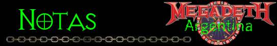

Rolling Stone - Noviembre de 1998
Tiene fama de ser hosco y malhumorado, sobre todo entre los periodistas. Dicen que cuando Dave Mustaine contesta una pregunta, suele responder con la menor cantidad posible de palabras, y a veces ni eso. Quienes no lo conocen aseguran que es un hombre de mal talante, y quienes ya han tenido algún contacto con la estrella o se han detenido a leer alguna sucinta biografía presumen que el Rock & Roll y la lucha por el metal (heavy) lo han convertido en un duro.
En ambas aseveraciones hay algún prejuicio y bastante de estereotipo. ¿Que es lo que se espera del líder de una banda tan aguerrida como Megadeth? ¿Sonrisas y un vaso de jugo?
Sin embargo, eso es lo que encontramos cuando llegamos a la entrevista con Dave Mustaine. La casi legendaria figura del thrash metal ingresa en uno de esos típicos salones de hotel donde las empresas suelen mantener reuniones de ejecutivos y saluda con una sonrisa natural ciento por ciento; mientras, ofrece jugo y café como si fuera una azafata pelirroja y no una estrella del Rock más volcánico.
No es que siempre sea así; de hecho, quienes frecuentan su circulo mas intimo suelen describirlo como un hombre reservado y parco. Pero a Dave Mustaine le cambia el animo cuando pisa suelo argentino. El mismo lo dirá varias veces en el transcurso de una extensa y reveladora conversación, durante la cual intentara precisar que no se trata de un acto de pura demagogia que repite en todos los países que visita. "Cuando voy al Brasil o a Chile aclaro que me gusta tocar allí, pero que adoro la Argentina", dice, y suena convincente.
Hay poderosas razones que respaldan su actitud amistosa y hasta simpática. En octubre Megadeth convoco a una audiencia de 20 mil espectadores que llenaron el Parque Sarmiento. El dato no tendría especial relevancia si no fuera porque esta fue la cuarta incursión de la banda en Buenos Aires, y la anterior se había producido apenas un año antes. Es una suerte de romance que ha resistido el paso del tiempo y el acostumbramiento; algo que no pasaba desde que Los Ramones se separaron con un concierto en River, A ambos grupos les sucedió una cosa semejante: no eran considerados como números de primera línea en los Estados Unidos, y sus partidos de locales, a estadio repleto y con una hinchada ardorosa, los jugaban en una tierra lejana llamada Buenos Aires. A esto habrá que sumarle que los últimos tres albumes de Megadeth (Cryptic Writings (1997), Youthanasia (1994) y Countdown to Extintion (1992) han sido discos de oro, es decir, con mas de 30 mil copias vendidas.
"La verdad es que no tengo explicación para este fenómeno, pero me parece grandioso", comenta Mustaine sacudiendo su suculenta cabellera colorada. "Por eso mismo querernos grabar nuestro disco en vivo en Buenos Aires. Querernos que el publico norteamericano se de cuenta de que apesta." (risas)
Mala noticia para los fanáticos de la banda: el disco en vivo de Megadeth ha quedado en el freezer debido al cambio de baterista. A mediados de este año, Nick Menza abandono temporariamente el grupo para someterse a una cirugía. Pero, en verdad, Menza no se llevaba bien con el resto del grupo. Hoy Mustaine revela que Jimmy De Grasso, el nuevo baterista, es un miembro permanente del staff. "Jimmy no va a querer que saquemos un disco en vivo con el baterista anterior, y puedo entenderlo", explica Mustaine. Por otro lado, la rapidez con la que circulan las grabaciones piratas ha hecho que las tomas en vivo que Megadeth registro el año pasado en su presentación en Ferro ya estén en manos de los fans. "Creo", dice Mustaine, "que con este cambio y con las malditas grabaciones de los piratas, lo que corresponde es que estrenemos la incorporación de Jimmy con un nuevo disco de estudio que comenzaremos a grabar el 6 de enero. Calculamos terminar ese disco hacia Junio y enseguida volveremos a salir de gira. Entonces lo que vamos a hacer es grabar algunas de esas nuevas canciones en vivo y agregarlas al material que registramos en la Argentina, por lo que calculo que el disco en vivo -que no se cuando saldrá- durara unas dos horas y media, Quizá sea doble; mi problema, y lo asumo como tal, es que me importa demasiado la opinión de los fans y no quiero que se edite algo que no sea perfecto. No quiero sacar un disco que sea excesivamente largo o demasiado corto. Me acuerdo de cuando yo era chico y me fumaba un porro para escuchar Kiss Alive, y de toda la gente gritando como loca en el tema "Black Diamonds", pensaba que era genial. Años mas tarde, el productor de ese disco, Eddie Kramer, me contó que todo era trucado y me partió el corazón. No quiero que pase eso con los fans de Megadeth".
Hubo un tiempo en que Dave Mustaine no podía querer a nadie, ni siquiera a simismo. Miembro fundador de Metallica, junto a James Hetfield, Lars Ulrich y el bajista Cliff Burton, supo tener un comportamiento difícil de tolerar, por lo que permaneció en la banda solamente dos años, entre 1981 y 1983. Fue expulsado sin miramientos por sus problemas con las drogas y quedo muy resentido, de manera que se aboco a tramar su venganza: Megadeth fue el vehículo de esa revancha. El titulo del primer disco, Killing Is My Business... And Business is Good (Matar es mi negocio... y el negocio es bueno), daba cuenta del estado de animo del muchacho. El trabajo fue editado por un sello independiente y las buenas criticas que mereció apuraron la firma de un contrato con Capitol Records, el sello que publico Peace Sells... But Who's Buying? (La paz vende... ¿pero quien la compra?). Mustaine se engancho con la heroína y se vio envuelto en una espiral suicida que repercutió en la vida del grupo. Hubo innumerables cambios de formación. En 1990, el guitarrista Marty Friedman y el baterista Nick Menza llevaron estabilidad musical a la banda, sumándose a Mustaine y a Dave Ellefson. quienes habían estado parados dos años. Arrestado por manejar bajo el efecto de la heroína, Mustaine debió iniciar un tratamiento de recuperación que, poco a poco, fue devolviéndole la sobriedad. Hubo recaídas, marchas y contramarchas, pero hoy Mustaine sigue venciendo en una pelea que, según precisa, aun no ha terminado y se libra día tras día. Muy pocas veces acepto hablar del tema con la prensa.
Una vez comentaste que sobre el escenario sos Mustaine, pero fuera de el sos simplemente Dave. ¿Fue difícil ese transito?.
No, solía serlo, pero cuando vi a Axl Rose, a los Motley Crue y a otras bandas arruinándolo todo, tratando a la gente como mierda y yendo a la cárcel de cuando en cuando, pense: "¿Yo también me veré así?" Y me di cuenta de que si. Una cosa es hacer lo que uno quiera arriba de un escenario... Pero ahora, por ejemplo, somos tres tipos hablando amigablemente de cosas comunes. Me sentiría mal si tuviera una actitud del tipo "besen mi anillo". Yo se que mi carrera va a terminar algún día, pero los Rolling Stones o Aerosmith siguen tocando a los 50 y yo solo tengo 37, así que, espero, me queda un largo camino.
¿Cuándo comenzó el cambio de actitud?
Cuando escuche que Axl Rose hacia esperar a la gente dos horas. ¡Vamos! ¡Hasta Jesús fue puntual! Cuando te tomas muy en serio, no tenes oportunidad de divertirte, y para mi el Rock & Roll tiene que ser divertido. Es como si me enojara porque me traen discos solistas de Marty (Friedman) para que firme un autógrafo, Somos personas normales; cada día de nuestras vidas todos nos levantamos a la mañana de una manera muy parecida. Así se disfruta mas. Antes me levantaba de golpe. Sentía que me ahogaba, porque me había quedado dormido después de una borrachera. En realidad no me iba a dormir, simplemente me desmayaba.
Pero no siempre fue así. ¿Que ganaste y que perdiste al "limpiarte"?
¿Queres decir al dejar de drogarme?
Si.
Dentro de las cosas que perdí esta un circulo social integrado por personas que, en ese momento, pense que eran mis amigas, Cuando compras drogas, todos son tus amigos. Si te doy plata, y te doy, te doy, te doy, vas a ser mi amigo. Cuando estas en esa situación no te das cuenta de que, en primer lugar, estas comprando la amistad. Era tan miserable y estaba tan solo en esa época que me juntaba con gente de... ¿mierda? (en castellano). Todo eso lo perdí. Lo que gane: tener discos de oro en la Argentina y romperles el culo a los Smashing Pumpkins, que son enormes en los Estados Unidos, pero aquí solo venden 7 mil discos. Gane la oportunidad de tener una esposa y dos hijos. Mi hijo juega hockey sobre hielo y practica artes marciales, al punto que me despierta todos los días con una patada en los huevos; una costumbre por la que ahora comenze a dormir con las piernas cruzadas. Prefiero este despertar al anterior. ¿Que mas gane? Poder relacionarme bien con la gente, poder demostrarle a ustedes como soy realmente y no ese hombre tozco que a veces ven en el escenario. Ese es mi trabajo. Una vez subió un chico para abrazarme y me partió el labio con el micrófono. Mi reacción fue darle un cabezazo y, créanme, no me sentí orgulloso por eso. Pero ese es Mustaine. Apenas me baje del escenario me arrepentí. Eso ganas cuando estas limpio: reconoces tus propios errores.
¿Y como lo lograste?
Fue duro. Te lo puedo resumir en dos palabras: estuve muerto.
¿Sucedió durante la gira de "Countdown to Extintion"?
Exacto. Tuve una sobredosis y morí. Me llevaron a emergencias y llamaron a mi mujer para decirle: "Su marido acaba de morir. No se moleste en venir al hospital." Y Dios me devolvió la vida, Estuve muerto un largo rato, si tenes en cuenta que tuvieron tiempo de buscar el teléfono de mi esposa, llamarla, darle la noticia. Paso mucho tiempo hasta que creí la historia. Un empleado del hospital, que también es un consejero, me dijo: "Hermano, estabas muerto en la mesa." Y yo le respondí, "Estas tratando de asustarme, córtala y volve a tu trabajo", e inmediatamente volví a drogarme. No paraba de tomar drogas, no paraba de emborracharme. Hasta que un día, mientras iba en el auto, hablamos con mi esposa del asunto. Me dijo que cuando la llamaron del hospital y le dijeron que estaba muerto había pensado en que iba a pasar el resto de su vida sola. Entonces fue cuando los engranajes de mi cabeza frenaron en seco y cornprendi que si, que había sido verdad. Yo no vi ninguna luz blanca, ningún tunel; en todo caso, si había un túnel estaba tan dado vuelta que ni cuenta me di. No voy a decirles a ustedes que no esta bien tomar alcohol o drogas, no voy a darles un sermón; en todo caso no esta bien para mi, sencillamente porque cuando empiezo no puedo frenar.
Dave Mustaine nos da algunos detalles mas sobre su relación con las drogas, pero pide discreción. Le esta vedado revelar cual es el tratamiento que ha seguido para abandonarlas.
"Si yo caigo otra vez, algún pibe que esta tratando de salir de las drogas va a pensar que el tratamiento no funciona. Yo estoy en recuperación constante. Esto es algo en lo que trabajas todos los días."
Volvemos a la música, entonces. ¿Cómo dividen las partes de guitarra entre vos y Marty Friedman? ¿Por que no haces mas solos?
Creo que en el próximo disco voy a tocar mas. Con Marty mantenemos un combate mano a mano: sus solos son una excelente espada y los míos, un bate de béisbol; puedo golpear con el bate hasta matarte, pero Marty puede rebanarte la cabeza con un solo movimiento. Morís de las dos maneras. Marty toca con amor, yo lo hago con odio. Representamos dos estilos diferentes.
¿Cómo ves hoy la salud del heavy metal?
Las nuevas bandas norteamericanas de heavy metal decían que el metal estaba muerto. Entonces los periodistas comenzaron a llamar a estos grupos "los nuevos muertos". Personalmente, creo que hay nuevas bandas que son excitantes, interesantes, y no tienen nada que ver con nosotros. No nos afecta para nada, creo que esta bien que haya nuevos grupos que entretengan, porque mas allá de cualquier diferencia estilística tratamos de hacer lo mismo: rockear a los fans.
Mustaine se entusiasma con la reacción del publico argentino. Por momentos no parece un hombre de 37 años, padre de dos chicos y líder de Megadeth desde hace quince, sino otro adolescente mas, de esos que hacen guardia en la puerta del hotel para conseguir un autógrafo, un saludo o un poco de conversación. Eufórico, Dave sigue contando anécdotas.
"Ahora resulta divertido recordar que nuestro nuevo baterista fue parte de la banda de Alice Cooper cuando tocamos en Ferro, en 1995 como parte del festival Monsters of Rock. Yo le pregunte: ¿Que se siente ahora?. Y el me contesto que cuando escucho la reacción de la gente durante la actuación de Megadeth, que toco antes que Alice Cooper, penso que iba a ser muy duro tener que tocar después que nosotros."
Pero no son todas flores: Mustaine no termina de entender el porque de las escupidas. Se le explica que el publico sudamericano comprendió mal los libros que contaban la historia del punk ingles y el rito de las escupidas -de hecho, los mismísimos Sex Pistols se enojaron con el publico porteño que los saludo a puro salivazo-, y que ese malentendido se transformo en desagradable costumbre.
"Para mi, es lo mas vulgar que pueden hacer -razona-; por eso estoy practicando el castellano; ¡No escupan...! ¿putos? ¿Esta bien decir putos? No quisiera que se enojaran, pobres chicos."
El castellano de Mustaine mejora visita tras visita.
"Cuanto mas popular me convierto en este país, mas quiero saber sobre el. A veces, la fama no te da mucha oportunidad de ver cosas. Me gustaría ir a pescar, por ejemplo (aunque se que en Buenos Aires no se puede), me gustaría ir a ver caballos o como cocinan ese fabuloso bife argentino. Las chicas son las mas hermosas del mundo, realmente, y me parece que la Argentina es un país muy sexy y romantico."
Mustaine cuenta lo que sabe de la historia argentina y parece que entendió todo muy bien hasta que nos convertimos en República, (lo que sucedió después, acaso ni nosotros lo comprendemos).
"Mucha gente tiene miedo de hacer preguntas porque no quiere quedar como estúpida." ¿Pero que norteamericano conoce algo de la historia argentina? Tendrían que venir aquí y aprender. Yo no quiero llegar, tocar y después irme; quiero devolverle algo a la gente. Ellos nos dan tanto... ¡Me traen cosas para mis hijos! Cada vez que llego a Buenos Aires, en mi habitación hay una caja de mis habanos favoritos esperándome. ¿Cómo queres que no me guste este lugar?
¿Te diste cuenta de que, en la Argentina, Megadeth es mas grande que Metallica?
(Mustaine se ríe) Paso algo gracioso los otros días. Estabamos haciendo ejercicio con uno de los chicos de la banda y viendo MTV. Llego un asistente, saco la tele y puso Load, de Metallica. Pero yo no me di cuenta y pense que se trataba de la televisión. Paso un primer tema, un segundo, y así hasta que me di cuenta. "¡Hey! ¿¡Quién me esta jodiendo!?", grite, mas en broma que enojado. Hubo un tiempo en que no podía soportar escuchar a estos tipos, porque yo me fui de Metallica muy herido. Mas tarde comprendí que me despidieron porque me había transformado en alguien peligroso; cuando me emborrachaba me ponía muy violento. En cambio, cuando los otros miembros de la banda se emborrachaban, simplemente se ponían tontos. Un día tuve una pelea muy fuerte con James (Hetfield) y con el bajista de aquella época. Cometí un gran error, uno muy grande: les perdí el respeto, y perdí mi trabajo. Ahora miro hacia taras y, ¿saben? Merecía ser despedido.
Ahora que el resentimiento paso, que sos un tipo feliz, padre orgulloso, músico exitoso, ¿qué cosas te quedan pendientes como músico o como persona?
Yo fui maestro de escuela y les enseñaba artes marciales a los chicos, desde que tenían 4 años hasta la adolescencia. Era muy divertido. Los chicos llegaban a cierto punto en que pensaban que lo sabían todo y entonces les explicaba una nueva técnica. Los mas chiquitos, en cambio, suelen engancharse mas con el juego. Yo les pedía que me golpearan en él estomago y cuando lo hacían, me caía al piso gritando, y ellos me pateaban con muchas ganas. Creo que eso es lo que me gustaría hacer cuando llegara el momento de terminar con la música. Pero, ya lo dije, con 37 arios creo que me queda mucho por transitar con Megadeth.
Bueno, si John Lee Hooker sigue tocando a los 80 años, tenes para rato.
¡80 años! Creo que a esa edad voy a pasar mas tiempo intentando tener una erección que tocando la guitarra.
Miguel Mora / Sergio Marchi

Diario Clarin Suplemento "Sí" - 25/09/98
Al frente de Megadeth es el emblema del Heavy Metal para los pesados argentinos. Viene una vez por año a Buenos Aires y ya lo vieron 100 mil fans. ¿Que hizo para merecer esto? antes de su cuarto desembarco, el colorado repasa sus días junto a Metallica, a quienes acusa de "modernos' y asegura estar limpio de drogas.
Ahí va el Capitán Tuco, por el espacio interior del Sheraton de Santiago de Chile, vidrios y puertas giratorias adentro de la desesperación de doscientos metalheads chilenos. Dave Mustaine saluda con esa sonrisa diagonal de cuadro mal colgado y se dirige a la zona de la piscina con el pelo recién lavado.''Fotos todavía no. Esperen que se me seque el pelo." El líder del grupo heavy que más le gusta a la gente del Mercosur es coqueto, Por suerte, sale el sol de Santiago y el hombre que recuerda su despedida de Buenos Aires en el Monsters of Rock 97 como "el mejor momento que vivió en su carrera" despliega su melena seca y pide a su valet "algo negro para la foto". Y después esto: "Quiero contarte un secreto. Cuando tenia tres años fui secuestrado por alienígenas. Me llevaron por dos horas a una isla y me hicieron bailar. Dijeron: Terrícola, esto es el twist. Ahora, tu solo, debes recorrer el camino que lo separa del Heavy Metal.' Desde entonces, tengo una misión en la vida." Se puede decir que separados los Ramones el publico argentino apuro los papeles de nacionalización para Megadeth. Como sucediera con los punks neoyorquinos , primero se los espero mucho (recién debutaron en Buenos Aires a fines de 1994) y desde entonces se los recibe año tras año. Desde mediados de los 80, luego de alimentar su propio mito como integrante de la primera formación de Metallica, Dave Mustaine es Megadeth, una de las bandas que ayudaron a institucionalizar el thrash metal.
Al cabo de varios discos (Killing is my business... and business is good, Peace sells but who's buying y So Far, So Good, So What!), a partir de 1990 se afirmaron como un clásico del genero con Rust in Peace. Desde entonces, "mato" a Vic Rattlehead (la mascota que ilustraba sus discos), tuvo caídas y recaídas con el alcohol y las drogas, dos hijos y alcanzo un cierto nivel de sofisticación en su música. "A lo largo de estos años, vimos pasar el metal industrial, el grunge y el metal rap. Creo que es bueno escuchar a los fans y estar fuera de las modas", dice ahora.
¿Que te parecen los nuevos pesados tipo Korn?
Tienen algunas canciones que están bien, pero no siento incomodidad ante la música que hacen, algo que si debería sentir, viniendo de un grupo nuevo.
¿Te gusta lo que esta haciendo Metallica?
Se hicieron alternativos, modernos. Es todo lo que puedo decir. No somos grandes amigos. Hasta Master of Puppets (1986) tuvieron la cara de grabar temas que ensayaban conmigo, aunque jamas me pusieron en los créditos.
¿Es verdad que te fuiste de la banda porque te peleaste con James Hetfield por culpa de un perro?
La verdadera razón es porque estaba todo el día dado vuelta. Solía dejar un par de perros para que me cuiden las drogas. Un día, después de una noche muy salvaje, Hetfield se enojo conmigo y pateo a los perros. Yo devolví la patada pero a su trasero, no me arrepiento.
En 1993, cuando se cayo la primera visita de Megadeth al país, Dave Mustaine estaba pasando uno de sus peores momentos. Un año mas tarde, cuando por primera vez llego a la tierra prometida, fue derechito a Alcohólicos Anónimos y tuvo marca personal constante. "¿Cómo te enteraste de eso?" ruge y amaga con apagar el grabador. Por un momento, masculla como un oso montañés. Después se confiesa: "Y si, constantemente voy a reuniones de alcohólicos anónimos, en cualquier lugar que este en el mundo. Me desintoxique porque encontré formas de ocupar cada puto y dubitativo minuto de mi vida en no matarme. Cuando nació Justis, mi primer hijo, yo estaba ahí sosteniéndolo sin saber si se iba a caer de mis brazos, tal como estaba entonces".
"Me-ga-deth, Me-ga-deth, aguante Me-ga-deth." El cantito, sobre el estribillo de "Symphony of Destruction" es como la birome y el dulce de leche, un invento Argentino. Entre sus tres visitas anteriores ya los vieron mas de 100 mil fans y ya tienen en venta un show agregado al que darán el 1° de Octubre en Parque Sarmiento, programado para el 3 del mismo mes con Nativo y Nepal de soporte. Y mas: Además de usar el ambiente porteño para su postergado disco en vivo, rechazaron una oferta de hacer un unplugged para MTV, cosa que si harán aquí el 2 de octubre. Mustaine llega a la radio para hablar con Alfredo Lewin y el ex VJ de MTV dispara: "Dave. "No crees que los chilenos son mas salvajes que los argentinos?" Respuesta: "Solo puedo decirte que son mas fervorosos que los de Illinois".
¿Cuál crees que es la clave del romance Megadeth-Argentina?
El heavy argentino no deja que les vendan basura. Sin dudas, el publico argentino es la mejor droga que probé en mi vida. La única en la que vale la pena reincidir
José Bellas (Enviado especial a Santiago de Chile)

Por Tatiana Barrios - 14 de Enero de 1999
Lei en un monto de lugares que empesaron a tocar la guitarra para ganar popularidad con las chicas, ¿Es cierto?, ¿Cuando te diste cuenta que era importante para vos?.
No fue cuando empese, lo hice porque asi era facil conocer gente y hacerse popular. Todavia estaoy tratando de darme cuenta si es lo que quiero hacer por el resto de mi vida.
Tuviste un papel en la serie "Black Scorpion", ¿como fue eso?
Fue muy interesante, antes tuve otros papeles pero haciendo de mi mismo como en "The Heavy Metal Years". "Black Scorpion" fue interesante porque hacia de otra persona que no era yo. El director me llamo porque es fan the Megadeth y tenemos un monton de intereses en comun.
¿Como fue el concierto de año nuevo con Pantera, Soulfly, Black Sabatth y Slayer?
Ya habia tocado antes con todas ellas, pero fue divertido tocar en casa y fue el primer concierto de año nuevo.
Lei en El Ciberarmy/Megadinner Chat, que el disco nuevo iba a ser completamente diferente a todos los discos anteriores de Megadeth, ¿es cierto?
No te puedo decir porque todavia no esta terminado, entonces no se. Me encantaria poder decirte algo pero te estaria mintiendo...
Lei en "Karate Inside" que enseñas Karate para chicos...
Si enseño karate, pero como ahora estoy en el estudio no lo estoy haciendo.
¿Y tu hijo practica con vos?
Le enseño a Justis desde que tiene 4 años...
¿Que pensas de tocar en Brazil?
Me encanta Brazil, la primera ves estaba un poco asustado de tocar ahi pero cuando estas ahi y ves la gente y los hermosos lugares tu imagen cambia. Tocar en San Pablo fue fabuloso, Vinhedo fue un poco extraño porque no es como los otros lugares que solemos ir, ni sabemos cuantos fans tenemos ahi pero estubo fantastico. Curitiba fue una locura. Cuando a mas lugares vas mas amigos haces, mas aprendes sobre el pais y esta mucho mejor.
Siempre veo notas hablando sobre el publico brasilero, ¿cual es el mejor publico?
El mejor publico en Brazil fue el de Rock in Rio 2, fue el concierto mas grande que hicimos. El publico brasilero es muy calido y salvaje.
Muchos fans estaban muy enojados por la partida de Nick Menza pero despues del Monster Of Rock con Jimmy Degrasso vieron que remplazaba perfectamente o mejor a Nick. ¿Sentis esa tension en los fans despues del gran trabajo que Jimmy esta haciendo?
Mucha gente vino y me dijo que estaba muy enojada por la partida de Nick. Yo no voy a hacer un cambio para peor, Nick es un gran baterista y una gran persona pero vamos por caminos separados. Jimmy es mas que un miembro de la banda, es un gran baterista y una gran persona.
Hay algunos rumores de que Nicke esta empesando un nuevo proyecto llamado "Alive after death" ¿sabes algo sobre esto?
Nunca escuche nada sobre ese proyecto.
Megadeth cambio muchisimo musicalmente, mirando atras, ¿que pensas de los primeros albunes?
Cuando escucho "Cryptic .." y despues "Killing..." veo dos bandas diferentes. Es una progresion natural, y tenemos un montosn de diferentes musicos... en el principio todo iva muy rapido y ahora es mas melodico. Es mucho mas accesible para los fans. Si solo escribis sobre incendiar iglesias solo te va a seguir la gente que quema iglesias. Me encanta tener fans nuevos.
Particularmente considero a "Cryptic..." como todos los discos en uno...
Siempre tratamos de dar lo mejor de nosotros, cuando veo a bandas como Iron Maiden que siempre hacen lo mismo es como que sus fans se hacen mas pequeños...
Sin embargo algunos fans acusa a Megadeth de volverse mas comerciales con "Cryptic...". ¿Que pensas al respecto?
Creo que tienen derecho de pensar lo que quieran... Pero no me preocupa demasiado si no les gusta por eso...
Ubo algunos rumores sobre la participación de Megadeth en el tributo a UFO.
No se nada hacerca de eso.
Lei que son muy amigos con Alice Cooper. ¿Cuanto hace que lo conoces?.
Como 10 años, es mi padrino...
¿Como surgio la idea del restaurant?
Simplemente lo abrimos, es un restaurant de barbacoa y esta muy bueno. Pensamos que a la gente le encantaria comer una deliciosa carne en un buen lugar, ademas creemos que nos vamos a llenar de dinero.
¿Cuales son los planes para el proximo tour?
Tenemos planes para el tour pero todavia nada confirmado.
Tatiana Barros